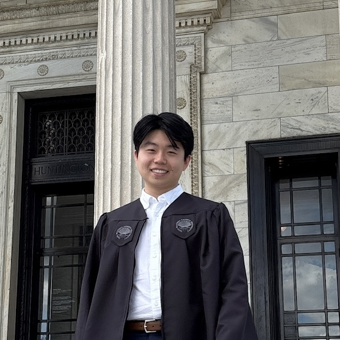

Matthew Chang
Co-founder and Advisor
Matthew was born and raised in Honolulu, HI, graduated from Punahou in 2021, and is deeply committed to educating and mentoring youth. Matthew is currently working as a research assistant at Case Western Reserve University.